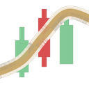

Ticker ScreenerPin the extension so your live watchlist is always one click away in the toolbar.
Pin the extension to the toolbar and open the sidebar so your live watchlist is always one click away.
Click the puzzle piece 🧩 icon at the top-right of Chrome, next to the address bar.
Find Ticker Screener in the extensions list.
Click the pin 📌 icon next to it. Done - the Screener icon now lives in your toolbar.
Click the puzzle piece 🧩 icon at the top-right of Firefox, or press Ctrl+Shift+A and open the Extensions panel.
Find Ticker Screener, click the gear icon and choose Pin to Toolbar.
Press Ctrl+Shift+S any time to open your live watchlist sidebar.